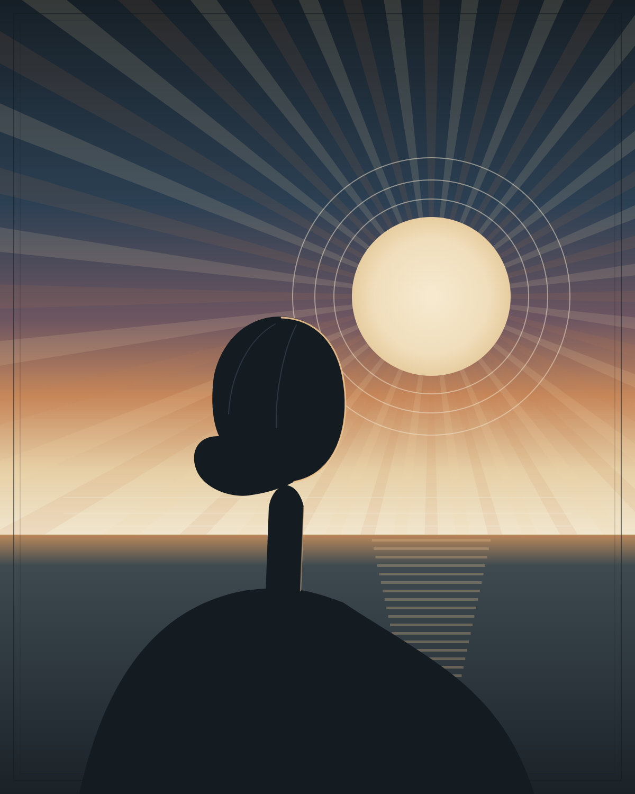
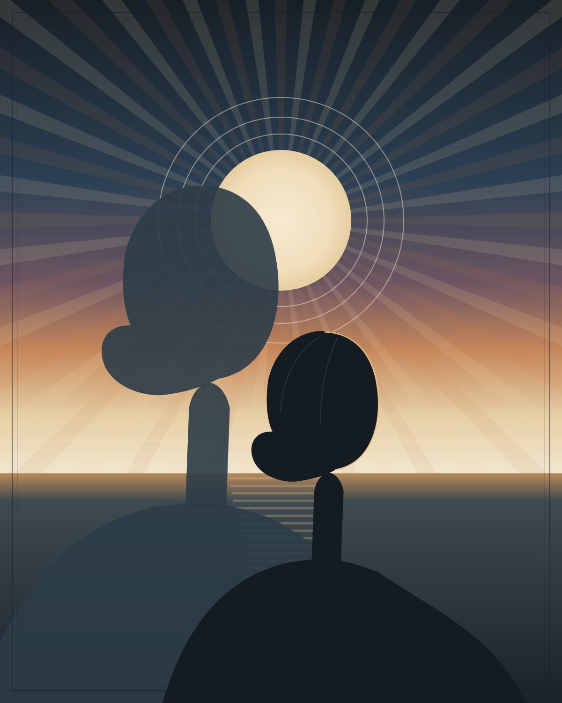
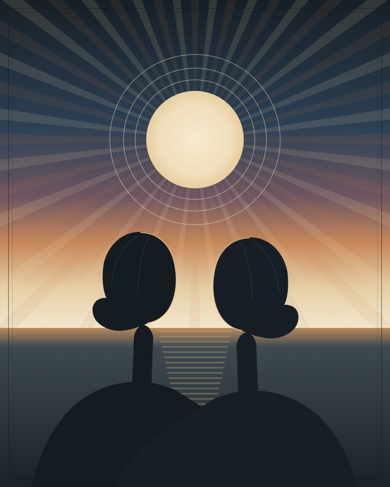

The secrets of who you are are written on your face. Ready to hear them?
You send me one photo of your face. We spend 75 minutes together. You leave with a recording, a written report, and a startling account of how you became who you are, and what sets you apart.


Not your partner, your parents, your boss, your coworkers. On the bad nights, not even the mirror. The version of you that you can describe is not the version that empowers you or holds you back. That version was set before you had language for it, and it can leave you in the dark.
I work from the other side of that. No interview. No personality test. Your face tells me what I need to know. It has been tracking your emotional life since before you were born. I read what got written there in your early years, what has stayed, what you replaced with something better, and the parts of you that can empower you but you have never quite been able to name.
Learn how the face records a life → The ScienceThe same conflicts on a loop. The silence that quietly irritates. The anxiety of never quite meeting an expectation. None of it is random, and almost none of it started with you.

Bring a face you want to understand. I will tell you what they carried out of childhood, because a person stops being a mystery the moment you know that.
Dr. Michael J. Lincoln was a clinical psychologist who discovered that the face keeps a record of persistent emotional experience. My training was not a weekend certificate. It was year after year: watching hundreds of his readings, sitting through his workshop a dozen times, doing hundreds of my own while he corrected them one face at a time. He asked me to carry his work forward. I have written four books on it, soon to be published, and I am the only person teaching this process. Your session comes with a deep legacy.
Real client words on work or life direction land here. Nothing invented until you approve it.
A reading of someone they wanted to understand. Their words, once collected.
Ideally one with a specific detail named, the moment the doubt broke.
A short intake form, at least one forward-facing photograph, no filters, no sunglasses. Send more if you like, including the faces of people you are trying to understand.
Live, anywhere in the world, where I share your reading with you. This is the part people cross oceans for.
Documentation in your inbox to return to time and again, to catch what you missed or to see how far you have moved. Paid when you pick your time on the calendar.
Your photographs are used for your reading and nothing else. The cloud recording is destroyed 72 hours after we finish, so save your copy. I keep your written report so you can ask for it again years from now, and I delete it the moment you ask. The full policy is one page, in plain English, and I mean every line of it.
For most people $450 is a lot of money, and you deserve to feel secure committing it. So you can cancel any time before we meet. No rigmarole: you hit cancel and choose to reschedule or get your money back. If you want the refund, I start it right away.
And the guarantee reaches into the session itself. You get the first ten minutes to step out if you are not feeling it, with no explanation owed to anyone.
Not feeling it? Step out. No words needed, I can’t see or hear you.
You will see my real calendar, pick a slot, and pay. The intake form arrives by email within the hour.